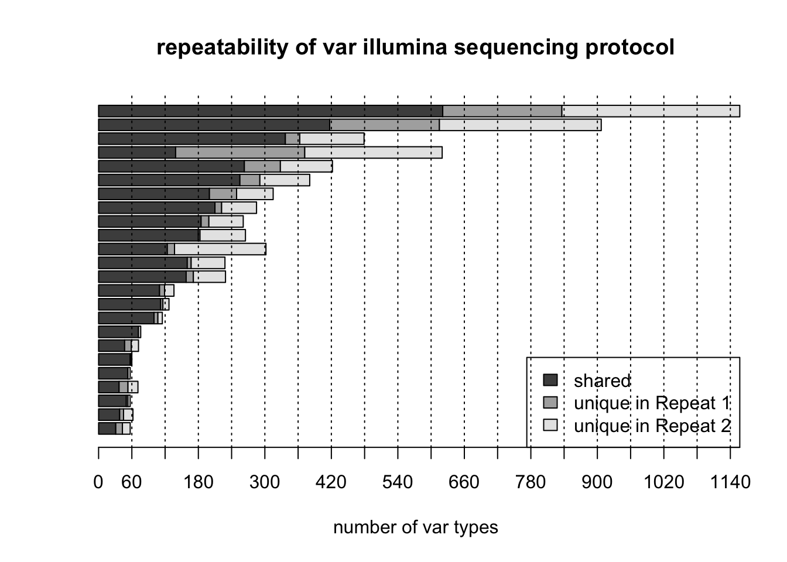
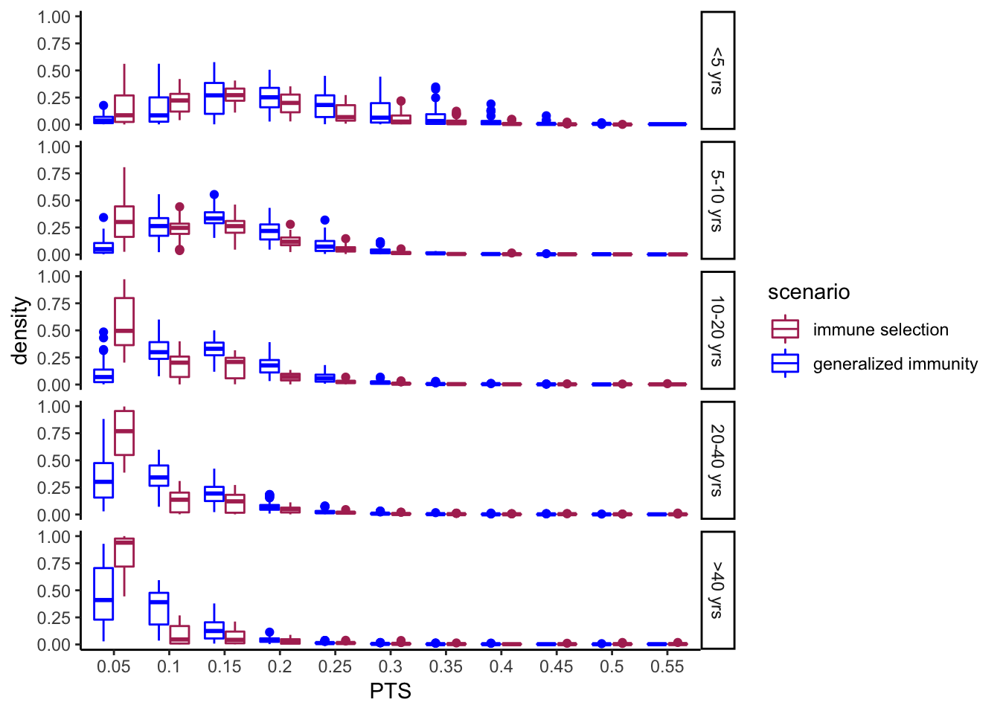

Last updated: 2018-12-03
workflowr checks: (Click a bullet for more information) ✔ R Markdown file: up-to-date
Great! Since the R Markdown file has been committed to the Git repository, you know the exact version of the code that produced these results.
✔ Environment: empty
Great job! The global environment was empty. Objects defined in the global environment can affect the analysis in your R Markdown file in unknown ways. For reproduciblity it’s best to always run the code in an empty environment.
✔ Seed:
set.seed(20180723)
The command set.seed(20180723) was run prior to running the code in the R Markdown file. Setting a seed ensures that any results that rely on randomness, e.g. subsampling or permutations, are reproducible.
✔ Session information: recorded
Great job! Recording the operating system, R version, and package versions is critical for reproducibility.
✔ Repository version: 90cc18e
wflow_publish or wflow_git_commit). workflowr only checks the R Markdown file, but you know if there are other scripts or data files that it depends on. Below is the status of the Git repository when the results were generated:
Ignored files:
Ignored: .DS_Store
Ignored: .Rhistory
Ignored: code/.DS_Store
Ignored: data/.DS_Store
Ignored: docs/.DS_Store
Ignored: docs/figure/.DS_Store
Untracked files:
Untracked: data/RepeatSeqs.fasta
Untracked: data/RepeatSeqs_renamed.fasta
Untracked: data/RepeatSeqs_renamed_blast6out.txt
Untracked: data/RepeatSeqs_renamed_centroids.fasta
Untracked: data/RepeatSeqs_renamed_otuTable.txt
Untracked: data/RepeatSeqs_renamed_otuTable_binary.txt
Untracked: data/RepeatSeqs_renamed_unqiues.fasta
Untracked: data/ghanaSeason_PTSbyAgeStat.txt
Unstaged changes:
Deleted: code/main.Rmd
| File | Version | Author | Date | Message |
|---|---|---|---|---|
| Rmd | 90cc18e | Qixin He | 2018-12-03 | wflow_publish(“analysis/*Rmd“) |
| html | d000cf7 | Qixin He | 2018-12-03 | Build site. |
| Rmd | 1260bf4 | Qixin He | 2018-12-03 | wflow_publish(“analysis/*Rmd“) |
| html | 8e9e9be | Qixin He | 2018-12-03 | Build site. |
| Rmd | a6844bf | Qixin He | 2018-12-03 | wflow_publish(“analysis/*Rmd“) |
| html | 73f735b | Qixin He | 2018-07-25 | Build site. |
| html | f191eaf | Qixin He | 2018-07-25 | Build site. |
| Rmd | 6073901 | Qixin He | 2018-07-25 | wflow_publish(“analysis/*“) |
| html | 995cd8b | Qixin He | 2018-07-25 | Build site. |
| Rmd | 220c10e | Qixin He | 2018-07-25 | incorporated |
library(tidyverse)python /Users/Qixin/Dropbox/Shai/S1-S4/clusterDBLalpha-master/clusterDBLa.py \
-o data/ \
-r data/RepeatSeqs.fasta \
--cpu 20[1] "S1MRS0666.MID42.42.P1.dec13"
[1] 2
[1] "S1MRS1011.MID90.90.P1.dec13"
[1] 2
[1] "S1MRS0542.MID08.08.P1.dec13"
[1] 2
[1] "S1MRS0268.MID110.110.P1.dec13"
[1] 2
[1] "S1MRS0889.MID69.69.P1.dec13"
[1] 2
[1] "S1MRS1740.MID73.73.P2.jan14"
[1] 2
[1] "S1MRS1853.MID85.85.P2.jan14"
[1] 2
[1] "S1MRS1336.MID28.28.P3.jan14"
[1] 2
[1] "S1MRS1736.MID72.72.P3.jan14"
[1] 2
[1] "S1MRS1750.MID74.74.P4.jan14"
[1] 2
[1] "S1MRS0354.MID74.74.P1.nov13"
[1] 2
[1] "S2MRS0058.MID5.5.P1.dec15"
[1] 2
[1] "S2MRS1113.MID51.51.P1.dec15"
[1] 2
[1] "S2MRS1462.MID71.71.P1.dec15"
[1] 2
[1] "S2MRS1343.MID66.66.P1.dec15"
[1] 2
[1] "S2MRS1516.MID73.73.P2.dec15"
[1] 2
[1] "S2MRS2221.MID100.100.P2.dec15"
[1] 2
[1] "S2MRS0988.MID45.45.P2.dec15"
[1] 2
[1] "S2MRS1011.MID46.46.P2.dec15"
[1] 2
[1] "S2MRS1814.MID85.85.P3.dec15"
[1] 2
[1] "S2MRS1420.MID69.69.P3.dec15"
[1] 2
[1] "S2MRS0153.MID11.11.P3.dec15"
[1] 2
[1] "S2MRS1847.MID86.86.P4.dec15"
[1] 2
[1] "S2MRS0190.MID13.13.P4.dec15"
[1] 2
[1] "S2MRS2365.MID105.105.P4.dec15"
[1] 2
[1] "S2MRS1877.MID87.87.P4.dec15"
[1] 2
[1] "S2MRS1241.MID60.60.P5.dec15"
[1] 2
[1] "S2MRS1848.MID86.86.P5.dec15"
[1] 2
[1] "S2MRS1486.MID71.71.P5.dec15"
[1] 2
[1] "S2MRS1878.MID87.87.P5.dec15"
[1] 2
[1] "S2MRS1131.MID51.51.P5.dec15"
[1] 2
[1] "S2MRS1338.MID65.65.P5.dec15"
[1] 2Parsed with column specification:
cols(
common = col_integer(),
A = col_integer(),
B = col_integer(),
percMin = col_double(),
Acommon = col_integer(),
Bcommon = col_integer(),
nameA = col_character(),
nameB = col_character()
) #save the Figure to output
quartz_off_screen
2 
| Version | Author | Date |
|---|---|---|
| 8e9e9be | Qixin He | 2018-12-03 |
sessionInfo()R version 3.5.0 (2018-04-23)
Platform: x86_64-apple-darwin15.6.0 (64-bit)
Running under: macOS High Sierra 10.13.6
Matrix products: default
BLAS: /Library/Frameworks/R.framework/Versions/3.5/Resources/lib/libRblas.0.dylib
LAPACK: /Library/Frameworks/R.framework/Versions/3.5/Resources/lib/libRlapack.dylib
locale:
[1] en_US.UTF-8/en_US.UTF-8/en_US.UTF-8/C/en_US.UTF-8/en_US.UTF-8
attached base packages:
[1] stats graphics grDevices utils datasets methods base
other attached packages:
[1] bindrcpp_0.2.2 forcats_0.3.0 stringr_1.3.1 dplyr_0.7.5
[5] purrr_0.2.5 readr_1.1.1 tidyr_0.8.1 tibble_1.4.2
[9] ggplot2_3.1.0 tidyverse_1.2.1
loaded via a namespace (and not attached):
[1] tidyselect_0.2.4 reshape2_1.4.3 haven_1.1.1
[4] lattice_0.20-35 colorspace_1.3-2 htmltools_0.3.6
[7] yaml_2.1.19 rlang_0.2.1 R.oo_1.22.0
[10] pillar_1.2.3 withr_2.1.2 foreign_0.8-70
[13] glue_1.2.0 R.utils_2.6.0 modelr_0.1.2
[16] readxl_1.1.0 bindr_0.1.1 plyr_1.8.4
[19] munsell_0.4.3 gtable_0.2.0 workflowr_1.1.1
[22] cellranger_1.1.0 rvest_0.3.2 R.methodsS3_1.7.1
[25] psych_1.8.4 evaluate_0.10.1 labeling_0.3
[28] knitr_1.20 parallel_3.5.0 broom_0.4.4
[31] Rcpp_0.12.17 backports_1.1.2 scales_0.5.0
[34] jsonlite_1.5 mnormt_1.5-5 hms_0.4.2
[37] digest_0.6.15 stringi_1.2.2 grid_3.5.0
[40] rprojroot_1.3-2 cli_1.0.0 tools_3.5.0
[43] magrittr_1.5 lazyeval_0.2.1 crayon_1.3.4
[46] whisker_0.3-2 pkgconfig_2.0.1 xml2_1.2.0
[49] lubridate_1.7.4 rstudioapi_0.7 assertthat_0.2.0
[52] rmarkdown_1.9 httr_1.3.1 R6_2.2.2
[55] nlme_3.1-137 git2r_0.23.0 compiler_3.5.0 This reproducible R Markdown analysis was created with workflowr 1.1.1